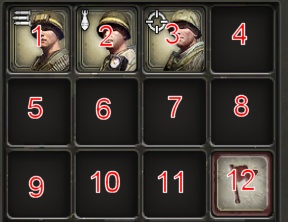
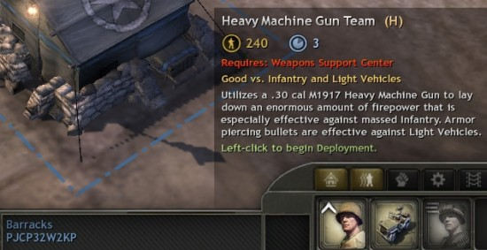
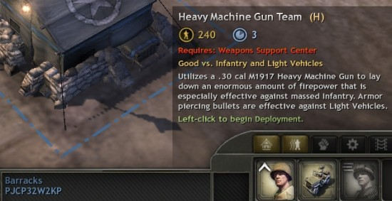
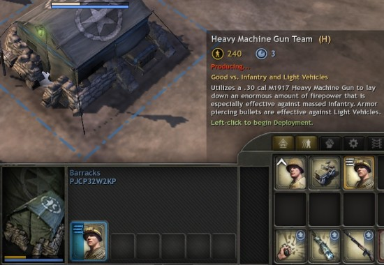
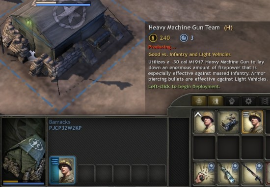

It looks like you're using a browser that does not support CSS - why don't you upgrade to a totally free new browser like Firefox?
Edit the barrack's squad list
The file for the allied barracks is attrib\ attrib\ ebps\ races\ allies\ buildings\ barracks.rgd - double click on this to launch it into the RGD editor. The barracks' squad list is found in GameData\ spawner_ext\ squad_table - click on this. You should see that squad_01 and squad_02 are set to the riflemen and jeep respectively. Ergo, we want to set squad_03 to the MG team. The file for the MG team is sbps\ races\ allies\ soldiers\ heavy_machine_gun_section.lua, so copy squad_01 into squad_03 and replace rifleman_squad.lua with heavy_machine_gun_section.lua . Press Save to save your changes.
UI positions

This is the panel which comes up ingame when you select the Weapon Support center. As you can see, the MG team is set to be in position 1. As the riflemen use position 1 in the barracks, we need to make a copy of the MG team file and set it to use position 3 instead of position 1, or else the MG team won't appear when you select the barracks.
This is the panel which comes up ingame when you select the Weapon Support center. As you can see, the MG team is set to be in position 1. As the riflemen use position 1 in the barracks, we need to make a copy of the MG team file and set it to use position 3 instead of position 1, or else the MG team won't appear when you select the barracks.
Copying the MG team
In the files list, find attrib\ attrib\ sbps\ races\ allies\ soldiers\ heavy_machine_gun_section.rgd , right click on it and select extract. Open Windows Explorer, and go to YourMod\ DataAttrib\ attrib\ sbps\ races\ allies\ soldiers\ and make a copy of heavy_machine_gun_section.rgd and call it heavy_machine_gun_section_barracks.rgd . To make the tool pick up the new file, switch from the Files tab to the Tools tab and double click on the Refresh file list tool. Once this has completed, switch back to the files list.
Changing the UI position
Launch heavy_machine_gun_section_barracks.rgd into the RGD editor and find GameData\ squad_ui_ext\ ui_group_position . Change the value from 1 to 3. Press Save to save your changes. One last thing you need to do is go back to the barracks file and change heavy_machine_gun_section.lua to heavy_machine_gun_section_barracks.lua . Remember to press save, and then run your mod:


Squad requirements
Unfortunately, the MG team is set to require a weapon support center before you can build it. Reopen heavy_machine_gun_section_barracks.rgd into the RGD editor and click on GameData\ squad_requirement_ext\ requirement_table\ required_01 . On the left, you will see that the Reference for required_01 is set to requirements\ required_structure.lua . Change required_structure.lua to required_none.lua and press save.

Download the two changed RGD files
Back to tutorial list

Download the two changed RGD files
Back to tutorial list
This documentation is provided under the GNU General Public License. All trademarks / copyrights are tm/r/c their respective owners.